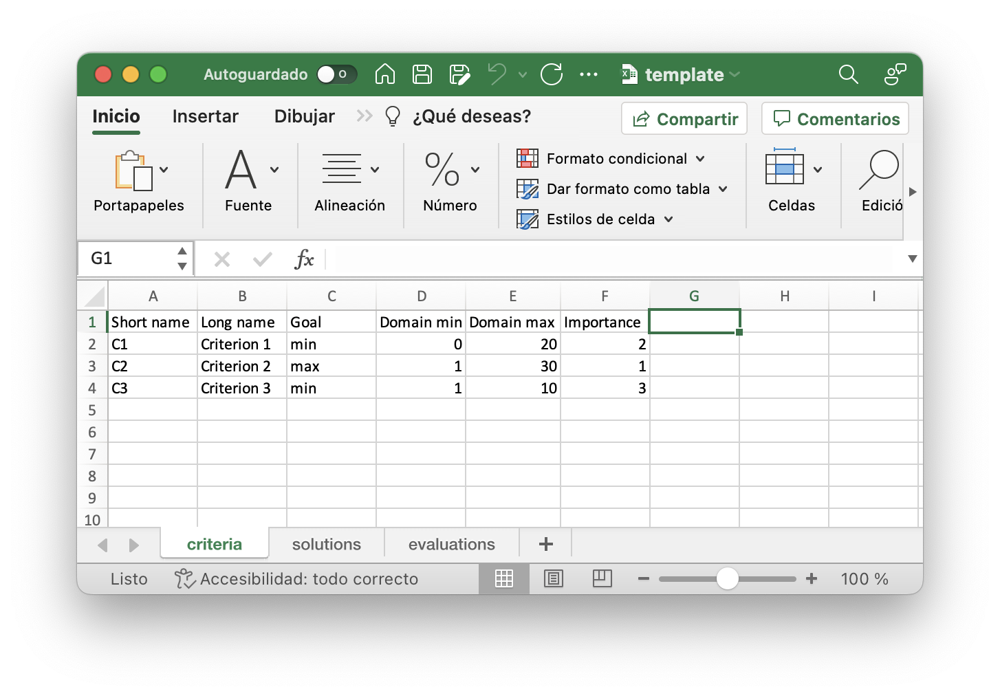
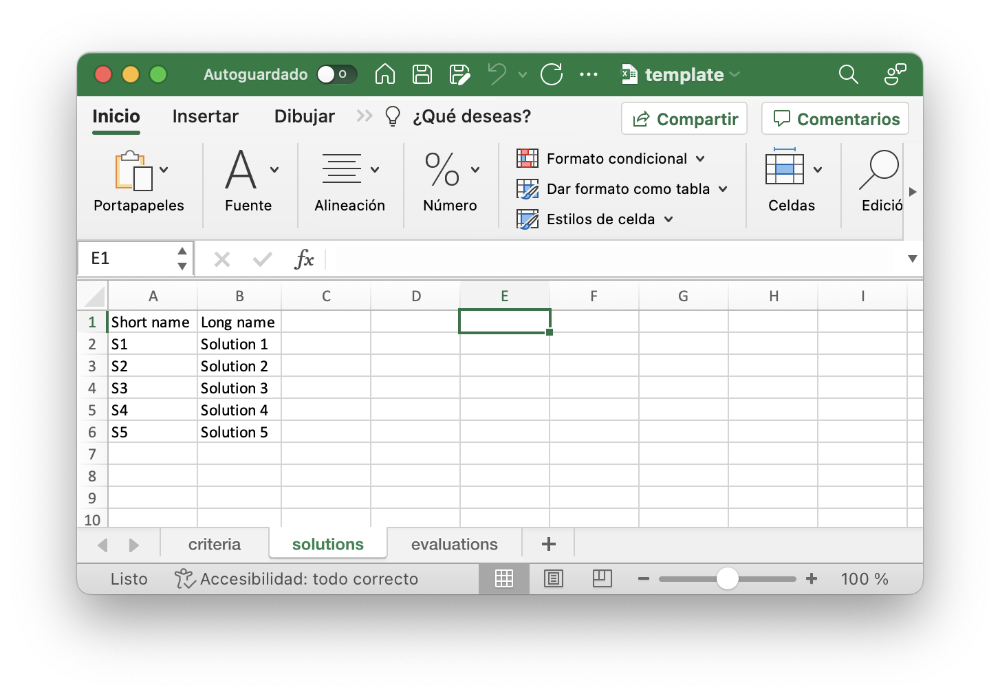
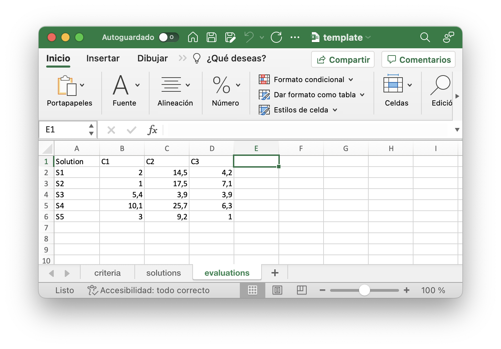

The purpose of this dashboard is to calculate the quality of solutions (in a given decision problem) based on a set of criteria. As input, a Microsoft Excel spreadsheet composed of three sheets is reuuired. See the guidelines below.
The first sheet, called "criteria" should include the following for each criterion:
The following figure shows an example of how the criteria data should be entered in the spreadsheet.
Similarly, the solutions sheet should include the following for each solution:
The following figure shows how the solutions data should be entered in the spreadsheet.
Finally, the evaluations of each solution in each criterion should be entered as shown in the following figure:
To facilitate data entry it is advisable to download this template and edit it at your convenience.